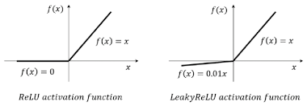
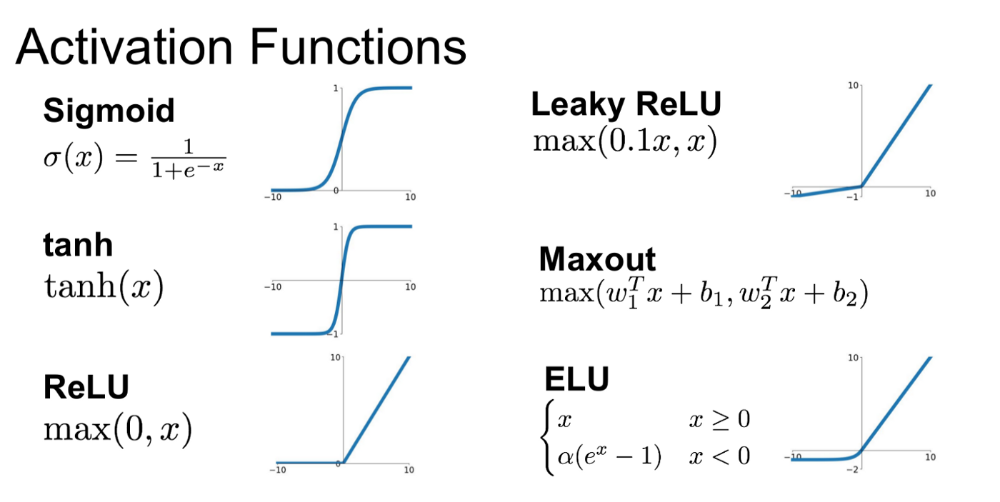
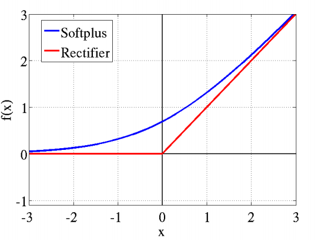
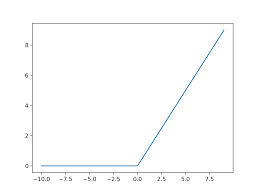
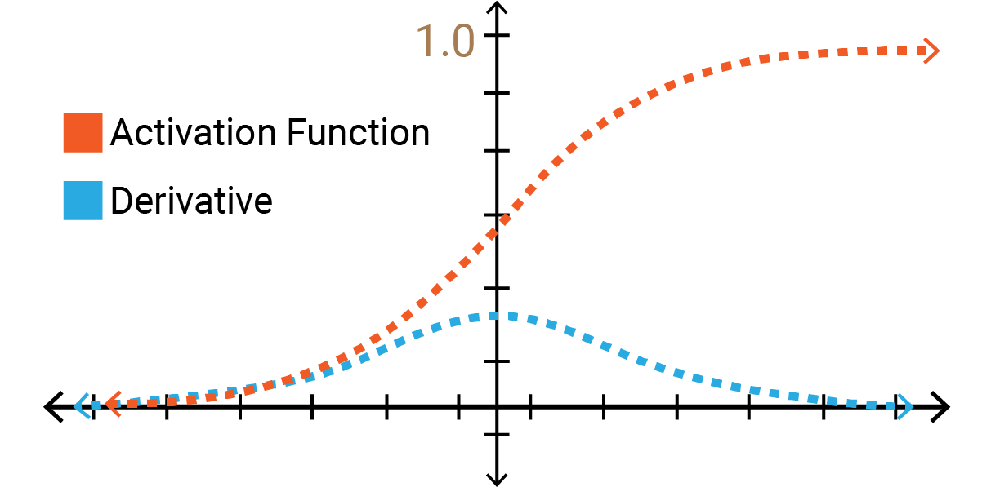

Deep learning self notes
Here in this turoial ,i have learned differneces of DL , ML and AI
Machine learning
Machine learning has three parts
- supervised learning
- unsupervised learning
- semi supervised learning
supervised learning mainly focus on sequential data there are two types regression classification
supervised learning
It is completely dependent on features and it has regression has multiple regression values for different features and classfication has two types and binary classification , multiple class configuration and multilabel class configuration
unsupervised learning
It has mainly thre types clustering ,segmentation and reduce dimension clustering mainly focus on making groups of a particular tribe and different types of tribes are made by given data.
semisupervised learning
It has typically called as baby which takes input at starting and further on it will learn through the inputs given example is netflix recommendation system
ANN mainy works on tabular data CNN mainly works on images and video data RNN mainly works on text data it works through sequence of data.
How an neural netowrk works?
there are mainly two operations goes in neuran lets take maths example
Y=w1x1+w2x2+w3*x3 and substitute in maths function called as activation function ex: sigmoid
ACTIVATION FUNCTIONS
activation funnctions are used to normalize the value between ranges,sum of weights and bias are substituted in activation function
SIGMOID ACTIVATION FUNCTION
Here value lies in between 0 and 1 , and formula for the function is and it is mainly used for binary classfication value below the 0.5 is taken as 0 and value above the 0.5 is taken as 1 and mainly used for classification problem and differentiation of sigmooid value lies in 0 to 0.25
The Sigmoid function is the most frequently used activation function in the beginning of deep learning. It is a smoothing function that is easy to derive. In the sigmoid function, we can see that its output is in the open interval (0, 1. We car think oKbrobability, but in the Strifet sense, don’t treat it as probability. The sigmoid function was once more pepular. It can be thought af as the firing rate of a neuron. In the middle where the slope is relatively large, itis the sensitive alda or inesnetroh. Of the sides where he slope very gentle, it is the neuron’s inhibitory area. The function itself has certain defects.
- When the input is slightly away from the coordinate origin, the gradient of the function becomes very small, almost zero. In the process of neural network backpropagation, we all use the chain rule of differential to calculate the differential of each weight w. When the backpropagation passes through the sigmod function, the differential on this chain is very small. Moreover, it may pass through many sigmod functions, which will eventually cause the weight w to have little effect on the loss function, which is not conducive to the optimization of the weight. This The problem is called gradient saturation or gradient dispersion.
- The function output is not centered on 0, which will reduce the efficiency of weight update.
- The sigmod function performs exponential operations, which is slower for computers.
Advantages of Sigmoid Function
- Smooth gradient, preventing “jumps” in output values.
- Output values bound between 0 and 1, normalizing the output of each neuron.
- Clear predictions, i.e very close to 1 or 0.
z=1/1+e^-y and value of y sum of weights and bias is substituted
and here is following graph

ReLU
here value lies between 0 and infinity th formula for the following function is
max(0,y) the value either 0 or positive but not less than 0.
and dervative of ReLU function is 0 or 1 it has only one value so that it doesnt have problem vanishing gradient descent problem and problem caused by ReLU is solved by leaky Relu ,the problem with relu is it makes the dead neuron it is called as dying relu
The ReLU function is actually a function that takes the maximum value. Note that this is not fully interval-derivable, but we can take sub-gradient, as shown in the figure above. Although ReLU is simple, it is an important achievement in recent years. The ReLU (Rectified Linear Unit) function is an activation function that is currently more popular. Compared with the sigmod function and the tan function, it has the following advantages:
- When the input is positive, there is no gradient saturation problem.
- The calculation speed is much faster. The ReLU function has only a linear relationship. Whether it is forward or backward, it is much faster than sigmod and tanh. (Sigmod and tanh need to calculate the exponent, which will be slower.) Ofcourse, there are disadvantages:
- When the input is negative, ReLU is completely inactive, which means that once a negative number is entered, ReLU will die. In this way, in the forward propagation process, it is not a problem. Some areas are sensitive and some are insensitive. But in the backpropagation process, if you enter a negative number, the gradient will be completely zero, which has the same problem as the sigmod function and tan function.
- We find that the output of the ReLU function is either 0 or a positive number, which means that the ReLU function is not a 0-centric function.

Leaky ReLU
f(x) = max (0.01*x, x)
In order to solve the Dead ReLU Problem, people proposed to set the first half of ReLU 0.01x instead of 0. Another intuitive idea is a parameter-based method, Parametric ReLU: f(x)= max(alpha x,×), which alpha can be learned from back propagation. In theory, Leaky ReLU has all the advantages of ReLU, plus there will be no problems with Dead ReLU, but in actual operation, it has not been fully proved that Leaky ReLU is always better than ReLU,but it can cause the vanishing gradient descent problem so we need to switch something better than leaky relu that is ELU
ELU
ELU is also proposed to solve the problems of ReLU. Obviously, ELU has all the advantages of ReLU, and: • No Dead ReLU issues • The mean of the output is close to 0, zero-centered One small problem is that it is slightly more computationally intensive. Similar to Leaky ReLU, although theoretically better than ReLU, there is currently no good evidence in practice that ELU is always better than ReLU.
PReLU
PReLU is also an improved version of ReLU. In the negative region, PReLU has a small slope, which can also avoid the problem of ReLU death. Compared to ELU, PReLU is a linear operation in the negative region. Although the slope is small, it does not tend to 0, which is a certain advantage.
We look at the formula of PReLU. The parameter a is generally a number between 0 and 1, and it is generally relatively small such as a few zeros. When a = 0.01, we call PReLU as Leaky Relu, it is regarded as a special case PReLU it. Above, y; is any input on the ith channel and a; is the negative slope which is a learnable parameter.
• if a =0, f becomes ReLU • if a>O f becomes leakv ReLU • if a; is a learnable parameter, f becomes PReLU
SWISH
The formula is: y = x * sigmoid (x) Swish’s design was inspired by the use of sigmoid functions for gating in LSTMs and highway networks. We use the same value for gating to simplify the gating mechanism, which is called self-gating. The advantage of self-gating is that it only requires a simple scalar input, while normal gating requires multiple scalar inputs. This feature enables self-gated activation functions such as Swish to easily replace activation functions that take a single scalar as input (such as ReLU) without changing the hidden capacity or number of parameters.
- Unboundedness (unboundedness) is helpful to prevent gradient from gradually approaching 0 during slow training, causing saturation. At the same time, being bounded has advantages, because bounded active functions can have strong requairzation, and larger negative inputs will be resolved.
- At the same time, smoothness also plays an important role in optimization and generalization. used only when there is more than 40 layers
softplus function
The softplus function is similar to the ReLU function, but it is relatively smooth. It is unilateral suppression like ReLU.It has a wide acceptance range (0, + inf).solves dead neuron problem Softplus function: f(x) = In(1 + exp x)
helps in the differentiation at zero
softmax function
used for multi class classification
for an arbitrary real vector of length K, Softmax can compress it into a real vector of length K with a value in the range (0, 1), and the sum of the elements in the vector is 1. It also has many applications in Multiclass Classification and neural networks. Softmax is different from the normal max function: the max function only outputs the largest value, and Softmax ensures that smaller values have a smaller probability and will not be discarded directly. It is a “max” that is “soft”. The denominator of the Softmax function combines all factors of the original output value, which means that the different probabilities obtained by the Softmax function are related to each other. In the case of binary classification, for Sigmoid, there
sigmoid and softmax are actually kept in last layer

Threshold Activation
Here value lies in between -1 to 1 and dervivative of function lies in between 0 to 1 and it can cause vanishing gradient descent problem and gradient descent problem
Tanh is a hyperbolic tangent function. The curves of tan function and sigmod function are relatively similar. Let’s compare them. First of all, when the input is large or small, the output is almost smooth and the gradient is small, which is not conducive to weight update. The difference is the output interval. The output interval of tanh is 1), and the whole function is 0-centric, which is better than sigmod. In general binary classification problems, the tan function is used for the hidden layer and the sigmod function is used for the output layer. However, these are not static, and the specific activation function to be used must be analyzed according to the specific problem, or it depends on debugging.
Loss Function
and loss function is sigma((y-y^)^2) and new weight upgradation is happened
Wnew=Wold-L.R(diff(LOSS)/diff(Wold))
gradient descent
In mathematics genrally gradient descent is also called as steepest descent is useed to find local minimum of the function,here value gets decreased as differentiation happens and learning rate.

back propagation
here in this the weights are updates by using chain rule ,chain rule is nothing but continous chain process happpened to update weights ,weights are effecting the outputs so we include outputs also in chain rule and weight get updated. And epoch means one forward and backwqard propogation.

Vanishing gradient descent
Here the value of dervative of sigmoid function has range between 0 to 0.25 so the change in value ios very low compared to other actuvation function to solve this problem only new method has been approached that is ReLU function.
exploding gradient descent
when weights are higher the exploding gradient descent problem occurs this need to be stoped for that we can use ReLU function.
Dropout and Regularization
here in this dropout part the research is done by two people called srivastav and geofrey hinton some feautures are selected randomly and trained on train data but for test data all networks are activated for that p value is seleted according to that and on test data weight is multiplied with p value for test data .we can find drop out value using hyper parameter optimization .
weight initialization
here three basic rules of weight inittialization is
- weight should be small
- weight should not be same
- weight should have good variance
methods for weight intialization
Uniform distribution
here weights are initialized between a,b a=-(1/sqrt(fan_in)) b=(1/sqrt(fan_in)) and value is (a,b)
xavier normal
here weight are initailizaed between (0,sigma) and id normal distribution works well with sigmoid activation function
sigma=sqrt(2/fan_in+fan_out)
xavier uniform
here weigth are initialized on uniform distribution works well with sigmoid activation function
weight lies between (-sqrt(6)/sqrt(fan_in+fan_out),sqrt(6)/sqrt(fan_in+fan_out))
he uniform
here weight are initialized between and uniform distribution and works well with ReLU actuvation function
w=(-sqrt(6/fan_in),sqrt(6/fan_in)
he normal
here weight initialized between normal distribution and work welll with ReLU actuvation functio w=(0,sqrt(2/fan_in))
The main difference between gradient descent ,sgd and mini batch sgd is gd need to have more computational power than compared batch sgd and for convergence of points is straigh for gd and msgd it si zig zag and mini batch sgd is time consuming
local maxima and local minima ,here local minima type of graph mainly occurs in deep learniing techiniques and convex function type is for machine learning for linear and logistic regression,due to noise in mini batch sgd we can used sgd with momnetum
sgd with momentun
It is used for reducing noise while using sgd with mini batch we use exponential weighted average


ADAGRAD OPTIMIZER
Adagrad is an optimizer with parameter-specific learning rates, which are adapted relative to how frequently a parameter gets updated during training. The more updates a parameter receives, the smaller the updates. One main problem with adagrad is the alpha value for learning rate increases heavily sometimes.
Adagrad stands for Adaptive Gradient Optimizer. There were optimizers like Gradient Descent, Stochastic Gradient Descent, mini-batch SGD, all were used to reduce the loss function with respect to the weights.


w(t) = value of w at current iteration, w(t-1) = value of w at previous iteration and η = learning rate. In SGD and mini-batch SGD, the value of η used to be the same for each weight, or say for each parameter. Typically, η = 0.01. But in Adagrad Optimizer the core idea is that each weight has a different learning rate (η). This modification has great importance, in the real-world dataset, some features are sparse (for example, in Bag of Words most of the features are zero so it’s sparse) and some are dense (most of the features will be noon-zero), so keeping the same value of learning rate for all the weights is not good for optimization.

Here, η is a constant number, epsilon is a small positive value number to avoid divide by zero error if in case alpha(t) becomes 0 because if alpha(t) become zero then the learning rate will become zero which in turn after multiplying by derivative will make w(old) = w(new), and this will lead to small convergence.

is derivative of loss with respect to weight and g_i^2 will always be positive since its a square term, which means that alpha(t) will also remain positive, this implies that alpha(t) >= alpha(t-1).
It can be seen from the formula that as alpha(t) and \eta_t^’ is inversely proportional to one another, this implies that as alpha(t) will increase, \eta_t^’ will decrease. This means that as the number of iterations will increase, the learning rate will reduce adaptively, so you no need to manually select the learning rate.
- Advantages of Adagrad:
- No manual tuning of the learning rate required.
- Faster convergence
More reliable One main disadvantage of Adagrad optimizer is that alpha(t) can become large as the number of iterations will increase and due to this \eta_t^’ will decrease at the larger rate. This will make the old weight almost equal to the new weight which may lead to slow convergence
adadelta and rmsprop
to not increse the value of heavily we use adadelta and we to solve this problem by using Wavg

stoicastic gradient descent
Doesnt work like gd it takes one loss and calculates it and for 1 epoch the number of iterations done in stoicatsic gradient number of records
difference between gd vs sgd vs mini sgd
gd takes whole data sgd takes only one data mini sgd takes batches of data
LOSS FUNCTIONS
There three tyoe of functions loss function,cost function and error function .so loss function is difference between the expected output minus real output of one data point and cost functionm is batch of points..and error function is same like loss function The loss function is very important in machine learning or deep learning. let’s say you are working on any problem and you have trained a machine learning model on the dataset and are ready to put it in front of your client. But how can you be sure that this model will give the optimum result? Is there a metric or a technique that will help you quickly evaluate your model on the dataset?
Wikipedia says, in mathematical optimization and decision theory, a loss or cost function (sometimes also called an error function) is a function that maps an event or values of one or more variables onto a real number intuitively representing some “cost” associated with the event. In simple terms, the Loss function is a method of evaluating how well your algorithm is modeling your dataset. It is a mathematical function of the parameters of the machine learning algorithm.
In simple linear regression, prediction is calculated using slope(m) and intercept(b). the loss function for this is the (Yi – Yihat)^2 i.e loss function is the function of slope and intercept.
Regression
MSE(Mean Squared Error) MAE(Mean Absolute Error) Hubber loss
Classification
Binary cross-entropy Categorical cross-entropy
square mean error
(y-y’)^2 is mean square loss is not robust .
Regression Loss Mean Squared Error/Squared loss/ L2 loss – The Mean Squared Error (MSE) is the simplest and most common loss function. To calculate the MSE, you take the difference between the actual value and model prediction, square it, and average it across the whole dataset.
Advantage
-
Easy to interpret.
-
Always differential because of the square.
-
Only one local minima. Disadvantage
-
Error unit in the square. because the unit in the square is not understood properly.
-
Not robust to outlier
mean absolute error
The Mean Absolute Error (MAE) is also the simplest loss function. To calculate the MAE, you take the difference between the actual value and model prediction and average it across the whole dataset.
Advantage
-
Intuitive and easy
-
Error Unit Same as the output column.
-
Robust to outlier Disadvantage
-
Graph, not differential. we can not use gradient descent directly, then we can subgradient calculation.
huber loss

Binary class entropy

multi class entropy
loss function cheat sheetloss function.